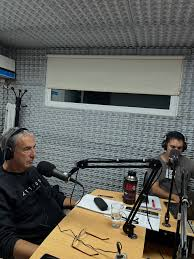
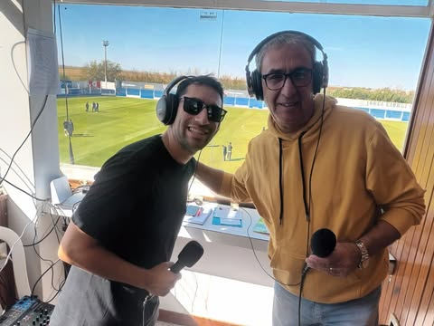

Historia Sobre El Bunker Deportivo
El Búnker Deportivo nació como un programa de radio y ciclo de transmisiones liderado por el reconocido relator regional Edgardo Raúl Budnik, conocido como "El Capataz del Relato". El proyecto se consolidó en el Alto Valle (Río Negro y Neuquén) como un espacio referente para el análisis y la cobertura de equipos locales, especialmente del Club Cipolletti.
Evolución Del Programa

El ciclo inició su historia en LU19 La Voz del Comahue, donde Budnik estuvo más de una década. Posteriormente, "El Búnker Deportivo" continuó su crecimiento trasladándose a otras emisoras de la región, formando parte de la grilla de FM Máster y emitiéndose también a través de Radio Nacional Neuquén.
A través de sus transmisiones, el equipo realiza coberturas itinerantes acompañando al Club Cipolletti en sus distintos compromisos, tanto en condición de local como en distintos puntos del país. El programa se puede escuchar de lunes a viernes y cuenta con un equipo de comentaristas, locutores y técnicos.
Origen y Trayectoria Inicios

El grupo de periodistas comenzó haciendo coberturas y relatos en distintas emisoras de la región del Alto Valle.Etapa histórica: El proyecto radial se afianzó cuando desembarcaron en LU19 (la histórica emisora de AM), donde fueron los responsables de las transmisiones deportivas durante más de una década.Actualidad: Tras cerrar su etapa en la radio tradicional, la propuesta de Budnik se mudó a Multimedios Máster y emite sus programas en vivo a través de plataformas digitales.